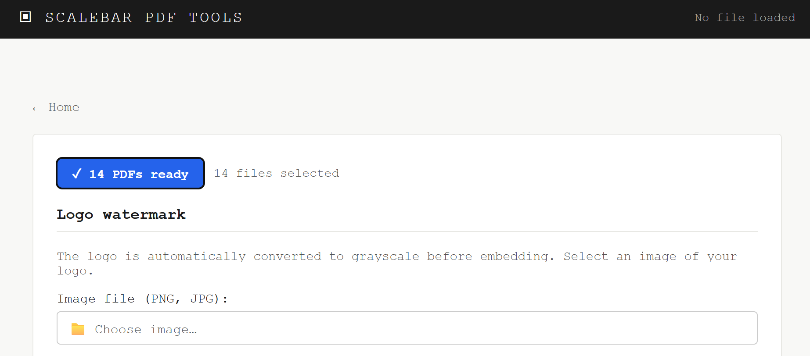
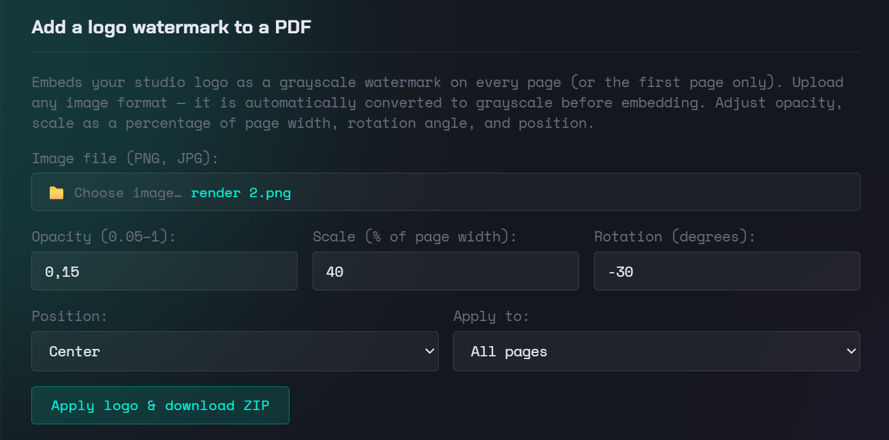
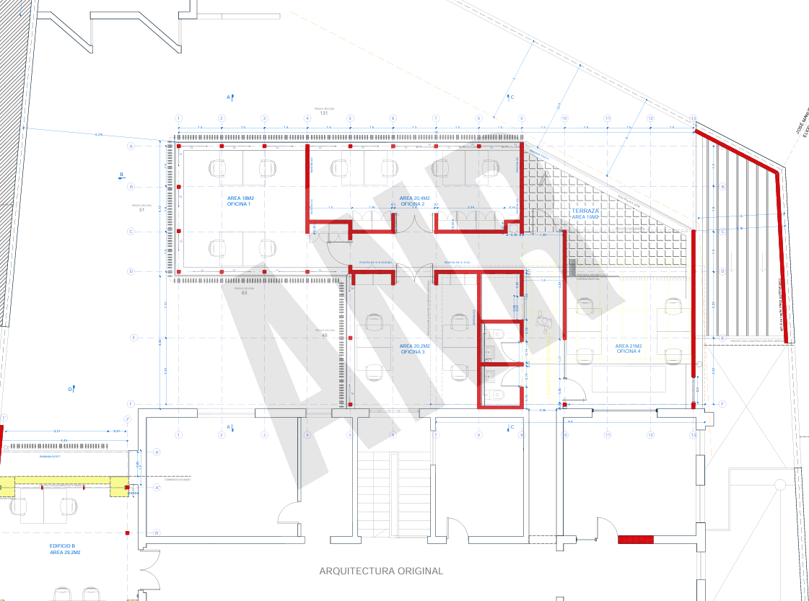

As an architect I regularly needed to send out drawing sets with a discreet studio logo on every sheet, both for branding and as a basic layer of protection against misuse. Doing it sheet by sheet in Acrobat is slow, and most free tools either rasterize the result or handle multi-file batches poorly. The logo watermark tool processes any number of PDFs at once and packages the result into a ZIP. You can find it here.
The logo is automatically converted to grayscale before embedding, keeping it neutral against any drawing background and avoiding color conflicts with the drawing content.
STEP 1 Load your PDFs and your logo
Open the Logo watermark tool and click Choose PDF(s). You can load an entire drawing set at once — ten, fifty or more files. Once loaded, the button confirms how many PDFs are ready to process.
Then click Choose image and select your logo file. PNG with a transparent background gives the cleanest result — the logo will appear directly on the drawing without any rectangle around it. JPG is also accepted. The tool converts the image to grayscale automatically, so the original colors of your file do not matter.

STEP 2 Configure the parameters
Four parameters control how the logo appears on each sheet:
- Opacity — between 0.05 and 1. For working drawings, 0.10 to 0.18 is enough to be readable without interfering with drawing content. For a cover sheet, 0.30 or higher works well.
- Scale — as a percentage of page width. 40% places a centered logo that reads clearly on A1 or A0 sheets. Reduce to 20–25% for a corner logo.
- Rotation — in degrees. A slight diagonal (around −30°) is the standard choice for a central watermark. For corner positions, 0° looks cleaner.
- Position — center, bottom right, top left, top right or bottom left. Center with a diagonal rotation is the default for a discreet full-sheet stamp.
The same settings apply to every page of every PDF in the batch. For different settings on a cover sheet versus the rest of the set, process them as two separate runs.

For the cleanest result, use a PNG with a transparent background — a white-background logo will appear as a white rectangle on the drawing. If you only have a JPG, increase the rotation slightly so the rectangle shape is less noticeable at low opacity. The grayscale conversion uses luminance weighting, so logos with strong contrast in their original colors will remain legible after conversion.
STEP 3 Export the result
Once the parameters are set, click Apply logo. The tool processes all pages of every PDF in the batch and generates a ZIP with the resulting files, ready to download.
